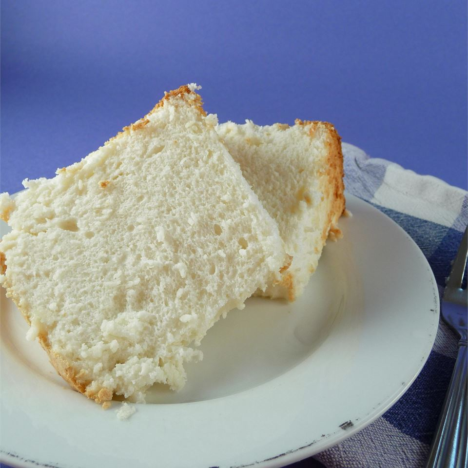

Home Made Angel Cake

This angel food cake is just like grandma use to make.
Ingredients
- 18 egg whites
- 2 teaspoons cream of tartar
- 1 pinch salt
- 1 cup cake flour
- 1 ½ cups white sugar
- ½ cup confectioners' sugar
- 1 teaspoon vanilla extract
Directions
- Preheat oven to 350 degrees F (175 degrees C). Sift cake flour and confectioners sugar together 5 times and set aside.
- In a large clean bowl, whip egg whites with a pinch of salt until foamy. Add cream of tartar and continue beating until soft peaks form. Gradually add sugar while beating, and continue to beat until very stiff. Add vanilla.
- Quickly fold in flour mixture. Pour into a 10 inch tube pan.
- Bake at 350 degrees F (175 degrees C) for 45 minutes.